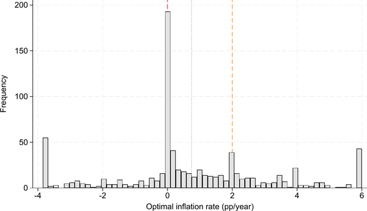

Abstract
We revisit the optimal long-run inflation rate using 777 estimates from 116 primary studies published between 1989 and 2026, the largest sample assembled to date. To our knowledge, this is among the first meta-analyses in economics whose primary-data extraction is performed end-to-end through a documented and auditable large-language-model pipeline, calibrated against a hand-coded training set and released for replication. Across publication-selection and selection-on-significance diagnostics that are applicable in this calibration-dominated corpus, the literature points to an optimum of roughly 0.6 percentage points per year, well below the two-percent targets commonly used by advanced-economy central banks. Bayesian model averaging over the full structural-moderator schema shows that cross-study variation is driven by genuine modelling choices, the choice of monetary benchmark (Friedman rule vs. laissez-faire), the transactions-frictions technology, the assumed shock structure, and the class of nominal-rigidity contract, rather than by selective reporting.
Fig: The literature is bimodal — one mode near price stability, one near the two-percent target
Histogram of 777 reported optimal inflation rates (in percent per year) from 116 primary studies, winsorised at the 5th and 95th percentiles. Solid red line: zero inflation (price stability). Dashed orange line: the two-percent central-bank target. Dotted black line: the literature's median.
Reference: Opatrny Matej, Opatrny Martin, Havranek Tomas, Irsova Zuzana, Hampl Mojmir (2026), "Optimal Inflation Rate: A Meta-Analysis." Charles University, Prague. Available at meta-analysis.cz/inflation.